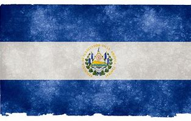

Bandera
La bandera de El Salvador está compuesta por tres franjas horizontales: azul, blanco y azul. En el centro, el escudo nacional representa la libertad y la independencia del país.
La bandera de El Salvador está compuesta por tres franjas horizontales: azul, blanco y azul. En el centro, el escudo nacional representa la libertad y la independencia del país.
El escudo de El Salvador presenta cinco montañas, simbolizando la unión centroamericana, y un gorro de la libertad irradiando luz, representando los valores de libertad y soberanía.
El Salvador obtuvo su independencia de España en 1821 y más tarde se unió a la Federación Centroamericana. Desde entonces, ha pasado por diferentes etapas históricas, incluyendo conflictos y reformas, que han moldeado su identidad actual.
El Salvador tiene una extensión territorial de aproximadamente 21,041 km², siendo el país más pequeño de Centroamérica.
El Boquerón es un parque natural en el cráter del volcán de San Salvador, famoso por su belleza escénica y vistas espectaculares.
La Ruta de Las Flores es un recorrido lleno de paisajes, pueblos pintorescos y artesanías, ideal para disfrutar la cultura salvadoreña.
El Lago de Coatepeque es un lago de origen volcánico famoso por sus aguas turquesas y sus actividades recreativas.